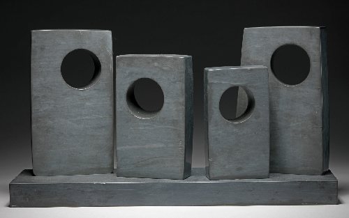
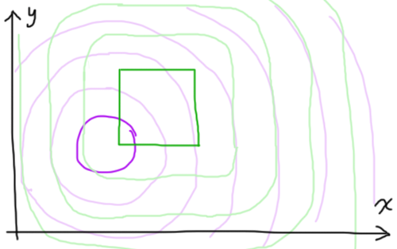
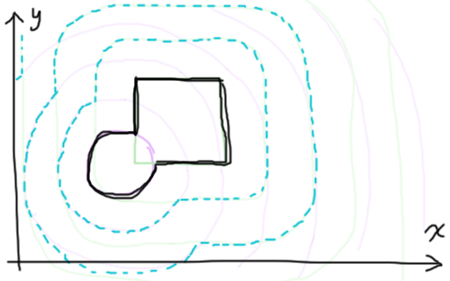
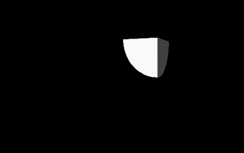
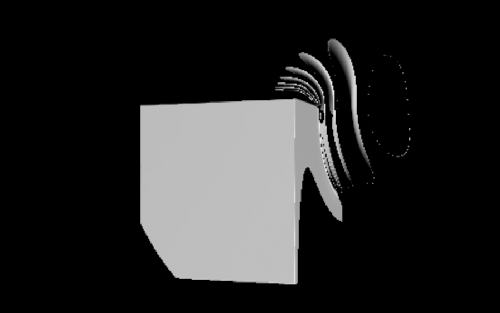

Gather 'round everyone, it's time to learn about Constructive Solid Geometry (CSG)! Up until now we've been able to bring to our world two primitive volumes; spheres and cubes. Now we'll try to combine them in different ways to create more interesting shapes. Let's pick up where we left off at the end of Sphere Tracing 103 with the following shader: https://www.shadertoy.com/view/4dG3RK.
Thus far we've been able to compute spheres and cubes. While sitting down and working out the math to generate a more complex shape (pictured below) is doable it's far from practical. Today we'll venture into CSG and explore the ways it can help us create intricate volumes with ease!
The idea is to take our two primitives and combine their distance fields. Let's have a look at the distance fields we've build up over the previous blog posts.
On their own, each of these distance fields will allow us to render an individual primitive. What we would like is to obtain more complex volumes. For instance, say we wanted something like the image below - how would we even go about that?
Now let's say we want to handle the simplest case where we want to combine these two volumes into one. If we sit down and imagine this sphere-cube overlapping shape and work out its distance field we would expect to see something like the graph below. Drawing the expected distance field on top of the existing fields gives us a solid lead - the field we've drawn perfectly overlaps either one of the previous fields at any given point!
The operation that combines the two distance fields into the desired one is the minimum function, min(). Another way to think about it is that for any point in space, when asking the distance function how far the nearest surface point is from you, it'll respond with the distance to whichever primitive is closest to you.
Let's jump right into a bit of code and rewrite our old distanceToNearestSurface function. We'll pull out the code for the cube into its own function and add in a simple function for a sphere distance field, where the sphere has radius 1 and is centred on (1,1,1) so we can see its intersection with the cube.
float cube(vec3 p){
float s = 1.0;
vec3 d = abs(p) - vec3(s);
return min(max(d.x, max(d.y,d.z)), 0.0)
+ length(max(d,0.0));
}
float sphere(vec3 p){
return length(vec3(1.0) - p) - 1.0;
}
float distanceToNearestSurface(vec3 p){
return min(cube(p), sphere(p));
}We've now got min() in our arsenal! So with it we can get the combination of volumes. The next question you might ask is "well... what about max() then? What does that do?" If you were to make that change in the previous bit of code, your render would instead look a little something like this:
That's because instead of giving you the closest object to you, it returns the one that's farthest away. What this means is that you will only ever be inside of a volume when their signed distance fields are both negative (ie. you're in the intersection of both volumes).
I'll take a moment here to make a brief aside - for those interested in venturing into a sea of super trippy/warpy/nonsensical shapes and imagery, I would encourage you to try combining the results of the sphere() and cube() SDF functions using mathematical operators. The following screenshot is what you get when your distance function returns cube(p)/sphere(p). Try it out in the Shadertoy editor! Watching the thing in motion is about as weird as you would expect :) I wouldn't think too hard about the implications of such a thing in terms of distance fields - when you start to combine SDF float values like this it no longer constitutes a "proper" distance field. This also means taming and using these methods is something of a crapshoot.
This is all nice but with min() and max() we're still not quite able to create volumes like the sculptures pictured at the top of this post... right? Surely there's more to it than just those two simple functions...
Well no, those two are really all you need (along with a bit of imagination). If you want to subtract the sphere from the cube all there is to do is take the intersection of the cube and the outside of the sphere! "Outside of the sphere? What the shit are you even talking about dude?" by that I mean the negative of the sphere's distance field. This effectively flips the sphere inside-out making its inside the outside - thus the intersection of the inverted sphere and the cube is the same as subtracting the sphere from the cube. I've changed a little more than the distance function in the code below to get a more visually interesting result.
Here's another way to phrase this if you have a hard time making sense of my inside-out explanation: what you're doing here is taking the intersection of the cube and the sphere's negative space.
float sphere(vec3 p){
return length(vec3(0.5, 1.0, 0.0) - p) - 1.8;
}
float distanceToNearestSurface(vec3 p){
return max(-sphere(p), cube(p));
}This post was on the shorter side but I feel I've covered enough here regarding CSG for today. Hopefully these tools will come in handy in your graphics-related experiments and projects :) There are more ways to handle combination of volumes which I may write about in the future. Before then I'm planning to add colours to the drab greyscale renders we've been working with up until now, so I'd expect this to come down the pipeline next. Thanks for reading!